Chapter 27 · Source-backed batch execution
Comet + Iceberg: from files to columnar operators
Start with processes, then follow one task through Iceberg planning, Arrow batches, native operators and Spark row boundaries. The plan atlas contains all 22 TPC-H/CometBench-H queries.
The model in one minute
| Question | Answer |
|---|---|
| Who owns the distributed query? | Spark: Catalyst, stage scheduling, executor placement, retries, broadcast and shuffle transport. Comet does not introduce a separate DataFusion cluster. |
| What does Comet replace? | Eligible Spark physical operators with native execution backed by Rust, Arrow and DataFusion. Unsupported parts can remain Spark operators. |
| Where does Rust run? | Inside each executor process through JNI, with task-owned native execution contexts and native runtime threads. Not one Rust pod per operator. |
| Is Iceberg a server that streams rows? | No. A catalog locates table metadata; snapshots/manifests describe data and delete files. Executor readers access the files. |
| Does columnar mean zero-copy everywhere? | No. Decoding, filtering, joins, shuffle partitioning, compression, schema adaptation and row conversion can allocate/copy. Arrow FFI avoids some serialization boundaries, not every copy. |
| What is actually observed here? | 88 planning captures on Spark 3.5.3 / Iceberg 1.8.1 / a local Comet 1.1.0-SNAPSHOT JAR. AQE off, 8 shuffle partitions. No result execution or throughput benchmark. |
Open all 22 query plans or jump to shuffle and join internals. “TPC dataset” here means the TPC-H-derived CometBench-H SQL in your existing Iceberg demo, not TPC-DS and not an audited TPC benchmark result.
Spark distributes work; Comet executes native fragments
Illustrative cluster deployment, not the local capture. JNI is in-process. DataFusion is a library inside each executor, not a separate cluster coordinator.


Two evidence timelines—do not mix them
Captured plans describe the installed Spark 3.5.3 runtime and identified JAR bytes. Source walkthroughs describe pinned development checkouts: Comet 184accac5b9cee6b761a6673c73c263adedef45e and Spark f9358a5587a2d512c5cf08ba4b10d60007c93f6e. The local Comet binary’s exact source tree is not established. Newer source features, flags and fused shuffle internals are not proof that the captured binary implements the same path.
All source excerpts come from git show <pin>:<file>, excluding dirty local Iceberg changes. Source tests below were inspected, not run. Planning succeeded for all queries and launched no Spark jobs; that does not prove result correctness, spill behavior or multi-executor reliability. The capture is local[2]: one local process, not two executor pods. Cluster diagrams are source-backed illustrations.
1. Driver: SQL → physical requirements → native fragments
- Spark resolves Iceberg tables and SQL types, simplifies expressions, pushes supported predicates and prunes columns.
- Catalyst rewrites subqueries and chooses join algorithms/build sides using statistics, hints, join type and configuration.
- Physical requirements add exchanges and local sorts when the children do not already provide the required distribution/order. Compatible partitioning can remove a would-be exchange.
- Comet session extensions install rules that recognize eligible scans and operators, serialize native plans, and retain Spark fallbacks where required. Spark’s columnar transition insertion and Comet cleanup rules make representation boundaries explicit.
- Spark turns the resulting RDD dependencies into stages/tasks. A physical node is not a process, a thread, a Spark stage or a network RPC.
A shuffle partition count of eight means eight logical reduce partitions before adaptive changes—not eight nodes. A task slot executes a partition attempt; multiple operators normally run in that task. A node label’s codegen id identifies a generated-code region, not an executor ID.
2. Iceberg: metadata pruning → exact rows
Iceberg pruning is not the same as row filtering
Planning chooses snapshot and file tasks. Native execution reads projected columns, applies supported delete semantics and produces Arrow batches. Retained filters enforce residual SQL predicates.


The driver-side Iceberg scan resolves a snapshot, schema and projected fields, and plans file tasks. A task includes file/split information, partition constants and relevant delete metadata. Pruning a file using partition or column bounds only proves that some files cannot match; it is not necessarily an exact row-level evaluation of the SQL predicate.
CometIcebergNativeScanExec prepares per-partition serialized scan data. The inspected native IcebergScanExec creates FileIO and an iceberg-rust ArrowReader with projection, delete handling and concurrent file reads. It enters a native runtime context; I/O/CPU work can be asynchronous even though Spark invokes execution from an executor task thread. Returned batches are adapted to the output schema.
Position deletes identify file positions; equality deletes identify rows by field values. Partition constants, schema evolution and field IDs matter: reading the Parquet columns alone is not equivalent to reading the Iceberg table. The inspected serializer carries delete descriptors and conservatively translated residual predicates; retained Filter nodes enforce remaining predicates. Exact support is version-, type- and delete-format-dependent—do not infer that every Iceberg feature works from one native scan label.
The captured plans name local metadata files. A real object-store deployment adds remote catalog/metadata and file requests, range reads, credentials and retries. Those are storage calls, not Spark driver RPC per row. Iceberg partition layout also does not automatically establish Spark’s required join hash distribution; the inspected native scan advertises unknown partitioning rather than a blanket storage-partitioned-join guarantee.
3. Executor: serialized fragment → RecordBatch stream
CometExecRDD.compute resolves partition inputs, injects partition-specific scan/shuffle data and creates a CometExecIterator. The iterator creates a native plan/context through JNI, polls execution for output batches and releases resources at task completion/end of input. A serialized native subtree can contain scan, filter, projection, join and aggregation together; do not draw a JNI round trip for every row or every logical operator.
The Rust planner translates protocol operators into DataFusion execution nodes. Filter evaluates a Boolean expression/mask; Project computes selected expressions/columns; aggregate retains keyed accumulator state; joins build/probe or merge; Sort establishes ordering. Operators exchange Arrow RecordBatches, whose arrays carry typed value buffers plus validity and offset buffers where applicable. A vectorized function may still loop over values internally. “Columnar” does not mean every expression uses SIMD.
Native buffers consume process memory alongside JVM heap, direct buffers, shuffle buffers and concurrent tasks. A larger Arrow batch amortizes calls but increases live memory and sometimes time to first output. Releasing a batch or native plan is an ownership/lifetime operation, not a distributed commit.
4. ColumnarToRow: where and why?
Columnar is a representation contract, not a language
Spark ColumnarBatch may use non-Arrow vectors. Comet needs an Arrow-compatible bridge. Unsupported operators can create interior conversion boundaries; the atlas plans show their actual placement.


| Boundary | What happens | How to recognize it |
|---|---|---|
| Spark vectorized scan → row SQL operators | ColumnarBatch vectors are consumed as InternalRow/UnsafeRow-compatible values; code generation can fuse subsequent row operators. | BatchScan → ColumnarToRow → Filter / Project / joins |
| Comet fragment → row consumer | CometColumnarToRow exposes native-produced columns to Spark’s row-facing execution/API path. | Often at the root of these captures; also inspect scalar subqueries and fallback islands. |
| Spark rows → native fragment | CometSparkRowToColumnar converts rows to Arrow-compatible batches. | An interior bridge; not free and not necessarily visible in an all-native example. |
| Spark non-Arrow columnar → Comet | CometSparkColumnarToColumnar adapts the vector representation. | ColumnarBatch is an interface, not an Arrow memory-layout guarantee. |
| Native columnar-to-row option | A separate optional converter creates row-format output natively for supported schemas. | In the inspected pin, spark.comet.exec.columnarToRow.native.enabled defaults false. It still outputs rows. |
Spark’s whole-stage code generation is not “allocate a boxed Java object for every column of every row.” Generated loops can access vectors, keep primitive values and null flags in local variables, and reuse UnsafeRow storage. It is a row-oriented execution contract with substantial optimization. Conversely, Comet keeps eligible compute columnar but can allocate output vectors, materialize hash tables and convert at boundaries.
Root CometColumnarToRow does not prove every interior operator was columnar. Check the complete tree and exchange mode. Some internal execute() calls introduce conversion in execution even when the display emphasizes a columnar exchange.
Operator dictionary: read a plan from leaves upward
| Spark / Comet node | Consumes → produces | State / distribution / blocking |
|---|---|---|
| BatchScan / CometIcebergNativeScan | Iceberg file tasks → column batches | Pruning, projection, data/deletes; scan task layout is separate from join partitioning. |
| Filter / CometFilter | Rows/batches → qualifying subset | Usually streaming; null predicate does not pass WHERE. Pushdown and retained filter may both appear. |
| Project / CometProject | Input attributes → selected/computed attributes | Usually streaming; may reduce shuffle width. Arithmetic/decimal/null semantics still matter. |
| HashAggregate / CometHashAggregate | Records or partial states → group accumulators/results | Partial, final and distinct stages differ. Look at keys and functions, not just the node name. |
| Exchange / CometExchange | Upstream partitions → required distribution | Hash, range, round-robin or single partition. This is the distributed boundary. |
| Sort / CometSort | One input partition → ordered partition | Can buffer/spill; a local sort alone is not global ORDER BY. |
| BroadcastHashJoin / CometBroadcastHashJoin | Probe partition + broadcast build relation → joined output | Build-side materialization; no need to shuffle the probe solely for this join. |
| ShuffledHashJoin / CometHashJoin | Co-partitioned inputs → joined output | Per-task build hash table; skew and build-side memory matter. |
| SortMergeJoin / CometSortMergeJoin | Co-partitioned sorted inputs → joined output | Merge keys, handle duplicate runs and residual condition. Sorting can dominate. |
| TakeOrderedAndProject / CometTakeOrderedAndProject | Partition candidates → global top K | Distributed candidate selection/merge; the node can hide work below the simple tree. |
| ReusedExchange | Reference to an existing exchange result | Not a second full recomputation by definition. Reuse is not a separate copy of the source table. |
| Subquery / reused subquery | Separate scalar/membership computation → value/branch | Read the extra plan sections. Optimizer can decorrelate into joins and aggregates. |
| ColumnarToRow / CometColumnarToRow | Batches → Spark row contract | Representation boundary, not a shuffle, RPC or durable write. |
For a detailed node, the captured plan prints inputs, outputs, condition, join type, build side, partition keys and expression IDs. These details are the answer to “what does this operator look like?” The atlas preserves them, not just a simplified screenshot.
Worked examples: Q1 and Q6
Q1: local partials reduce the shuffle payload
Illustrative values, captured operator shape. The group-by exchange and final range-ordering exchange do different jobs. AVG requires mergeable sum/count state, not averaging partition averages.


Q1: each scan task filters lineitems and computes partial sums/counts by return flag and line status. Hash redistribution co-locates the partials for a group; final aggregate merges them. A separate range exchange and sort provide the requested global order. For AVG, merge sum and count (with correct null rules), not the arithmetic mean of task averages. DISTINCT and decimal state can make real plans more complex.
Q6: filter → partial revenue sum → SinglePartition exchange → final sum. That exchange merges small partial states rather than shipping every qualifying source row if partial aggregation is effective. A global scalar result requires final coordination even in a columnar engine.
For an illustrative group, task A has sum 90/count 3 and task B sum 10/count 1. Correct AVG = 100/4 = 25; averaging 30 and 10 would yield 20. This explains why aggregate states, not just result-looking values, cross a partial/final boundary.
Presentation mental model
Spark decides where. Iceberg decides which files and rows belong. Arrow is the batch representation. Comet/DataFusion execute eligible local work. Shuffle moves partitions. A join needs compatible inputs. ColumnarToRow changes representation, not correctness or durability.
For any diagram, ask five questions: Which process owns this box? What representation crosses this arrow? What distribution/order does the next operator require? What state must fit or spill? What can be recomputed after failure?
Pinned implementation and inspected tests
Excerpts are from immutable local Git pins, not dirty working files. Spark links use its source pin. A Comet public link is included only when the complete file matches the public upstream parent 786bbc8fd630abfd0b29bdaffea6168f9f228863 byte-for-byte; otherwise the local pinned excerpt and file SHA-256 remain the evidence. The local merge pin is not assumed published. Apache source excerpts are under Apache License 2.0.
extensions · CometSparkSessionExtensions.scala:88
comet/spark/src/main/scala/org/apache/comet/CometSparkSessionExtensions.scala
Source pin 184accac5b9cee6b761a6673c73c263adedef45e · file SHA-256 d049b5cd28649970b93bfda10898243e5d72331a60481187e3379713c697ad68
88 class CometSparkSessionExtensions
89 extends (SparkSessionExtensions => Unit)
90 with Logging
91 with ShimCometSparkSessionExtensions {
92 override def apply(extensions: SparkSessionExtensions): Unit = {
93 // A session can be handed this extension more than once, for example through both
94 // spark.sql.extensions and SparkSession.Builder.withExtensions. Injecting twice would run
95 // every Comet rule twice per plan.
96 if (!CometSparkSessionExtensions.markConfigured(extensions)) {
97 logDebug("Comet extension already applied to these session extensions; skipping")
98 return
99 }
100 extensions.injectColumnar { session => CometColumnar(session) }
101 // Pre-3.5 only: tag AQE DPP regions so the conversion rules below leave them Spark-native.
102 // Registered before CometRule so tags are in place when conversion runs.
103 // No-op on Spark 3.5+; see CometSpark34AqeDppFallbackRule's class docstring.
104 injectPreSpark35QueryStagePrepRuleShim(extensions, CometSpark34AqeDppFallbackRule)
105 extensions.injectQueryStagePrepRule { session =>
106 CometRule(session, queryStagePrep = true)
107 }
108 injectQueryStageOptimizerRuleShim(extensions, CometPlanAdaptiveDynamicPruningFilters)
109 injectQueryStageOptimizerRuleShim(extensions, CometReuseSubquery)
110 extensions.injectPlannerStrategy { session => IcebergWriteStrategy(session) }
111 }
112
113 case class CometColumnar(session: SparkSession) extends ColumnarRule {
114 override def preColumnarTransitions: Rule[SparkPlan] = CometRule(session)
115
116 override def postColumnarTransitions: Rule[SparkPlan] = {
117 val rules = CometRule.postColumnarRules(session)
118 plan => rules.foldLeft(plan) { case (p, rule) => rule(p) }
119 }
120 }
121 }
122
123 object CometSparkSessionExtensions extends Logging {
124 lazy val isBigEndian: Boolean = ByteOrder.nativeOrder().equals(ByteOrder.BIG_ENDIAN)
125 private val SHUFFLE_MANAGER_KEY = "spark.shuffle.manager"
126
127 /** Session extensions Comet has already been injected into. Weak so sessions can be GC'd. */
128 private val configuredExtensions =
129 java.util.Collections.synchronizedMap(
130 new java.util.WeakHashMap[SparkSessionExtensions, java.lang.Boolean]())
131
132 /** Records that Comet is being injected into `extensions`; false if it already was. */exec-rdd · CometExecRDD.scala:100
comet/spark/src/main/scala/org/apache/spark/sql/comet/CometExecRDD.scala
Source pin 184accac5b9cee6b761a6673c73c263adedef45e · file SHA-256 28209acaefc517f9f84850d501ee7740bf2a201b77032fe63ea07977a8110cdf
100 override def compute(split: Partition, context: TaskContext): Iterator[ColumnarBatch] = {
101 // Must precede resolveInputObjects and the CometExecIterator: completion listeners run in
102 // reverse registration order, so registering first means this listener runs last, after
103 // nested native blocks and the iterator have published their final metric values.
104 Option(context).foreach(nativeMetrics.reportSpillMetrics)
105
106 val partition = split.asInstanceOf[CometExecPartition]
107
108 val (inputObjects, shuffleBlockIters) =
109 CometExecRDD.resolveInputObjects(
110 inputRDDs,
111 partition.inputPartitions,
112 shuffleScanIndices,
113 context)
114
115 // Only inject if we have per-partition planning data. The base plan bytes are identical
116 // for every partition of the stage, so the parsed tree and its prepared per-scan data are
117 // shared across this executor's tasks instead of being recomputed per task. The driver
118 // fingerprints the bytes once so the probe here does not rehash them.
119 val actualPlan = if (commonByKey.nonEmpty) {
120 val basePlan = PlanDataInjector.parseBasePlan(serializedPlan, planFingerprint)
121 val injected =
122 PlanDataInjector.injectPlanData(basePlan, commonByKey, partition.planDataByKey)
123 PlanDataInjector.serializeOperator(injected)
124 } else {
125 serializedPlan
126 }
127
128 val it = new CometExecIterator(
129 CometExec.newIterId,
130 inputObjects,
131 numOutputCols,
132 actualPlan,
133 nativeMetrics,
134 numPartitions,
135 partition.index,
136 broadcastedHadoopConfForEncryption,
137 encryptedFilePaths,
138 shuffleBlockIters,
139 taskFilePaths = partition.filePaths)
140
141 // Register ScalarSubqueries so native code can look them up
142 subqueries.foreach(sub => CometScalarSubquery.setSubquery(it.id, sub))
143
144 Option(context).foreach { ctx =>
145 ctx.addTaskCompletionListener[Unit] { _ =>
146 subqueries.foreach(sub => CometScalarSubquery.removeSubquery(it.id, sub))
147 }
148 }
149
150 it
151 }
152
153 // Duplicates logic from Spark's ZippedPartitionsBaseRDD.getPreferredLocations
154 override def getPreferredLocations(split: Partition): Seq[String] = {
155 if (inputRDDs == null || inputRDDs.isEmpty) return Nil
156
157 val idx = split.index
158 val prefs = inputRDDs.map(rdd => rdd.preferredLocations(rdd.partitions(idx)))
159 // Prefer nodes where all inputs are local; fall back to any input's preferred locationiterator · CometExecIterator.scala:124
comet/spark/src/main/scala/org/apache/comet/CometExecIterator.scala
Source pin 184accac5b9cee6b761a6673c73c263adedef45e · file SHA-256 d4ff4af44fd197eb596162e2b1dc605b9375c6cb621bb56d192b1223fbfc38a8
124 val createdPlan = nativeLib.createPlan(
125 id,
126 inputObjects,
127 protobufQueryPlan,
128 protobufSparkConfigs,
129 numParts,
130 nativeMetrics,
131 metricsUpdateInterval = COMET_METRICS_UPDATE_INTERVAL.get(),
132 cometTaskMemoryManager,
133 localDiskDirs,
134 batchSize = COMET_BATCH_SIZE.get(),
135 memoryConfig.offHeapMode,
136 memoryConfig.memoryPoolType,
137 memoryConfig.memoryLimit,
138 taskAttemptId,
139 taskCPUs,
140 keyUnwrapper,
141 // Propagated to Tokio workers running JVM UDFs so they see this Spark task's
142 // TaskContext and context ClassLoader. Read here because this class is only ever
143 // constructed on a Spark task thread (see `taskAttemptId` above); a JNI-attached Tokio
144 // worker has neither. See CometUdfBridge.evaluate.
145 TaskContext.get(),
146 Thread.currentThread().getContextClassLoader)
147
148 // Bind task-owned callbacks separately to preserve the existing createPlan JNI signature.
149 try {
150 shufflePartitionPusher.foreach { pusher =>
151 nativeLib.setShufflePartitionPusher(createdPlan, pusher)
152 }
153 createdPlan
154 } catch {
155 case failure: Throwable =>
156 // The task-completion listener is not installed until iterator construction succeeds.
157 try {
158 nativeUtil.close()
159 } catch {
160 case closeFailure: Throwable => failure.addSuppressed(closeFailure)
161 }
162
163 // Native only takes ownership of Arrow streams during the first executePlan call.spark-launch · CoarseGrainedSchedulerBackend.scala:457
spark/core/src/main/scala/org/apache/spark/scheduler/cluster/CoarseGrainedSchedulerBackend.scala
Source pin f9358a5587a2d512c5cf08ba4b10d60007c93f6e · file SHA-256 898dee7cd8d82533d49bdfa20d397cb09e349affa924c23ae118272d244ec77b
457 private def launchTasks(tasks: Seq[Seq[TaskDescription]]): Unit = {
458 for (task <- tasks.flatten) {
459 val serializedTask = TaskDescription.encode(task)
460 if (serializedTask.limit() >= maxRpcMessageSize) {
461 Option(scheduler.taskIdToTaskSetManager.get(task.taskId)).foreach { taskSetMgr =>
462 try {
463 var msg = "Serialized task %s:%d was %d bytes, which exceeds max allowed: " +
464 s"${RPC_MESSAGE_MAX_SIZE.key} (%d bytes). Consider increasing " +
465 s"${RPC_MESSAGE_MAX_SIZE.key} or using broadcast variables for large values."
466 msg = msg.format(task.taskId, task.index, serializedTask.limit(), maxRpcMessageSize)
467 taskSetMgr.abort(msg)
468 } catch {
469 case e: Exception => logError("Exception in error callback", e)
470 }
471 }
472 }
473 else {
474 val executorData = executorDataMap(task.executorId)
475 // Do resources allocation here. The allocated resources will get released after the task
476 // finishes.
477 executorData.freeCores -= task.cpus
478 task.resources.foreach { case (rName, addressAmounts) =>
479 executorData.resourcesInfo(rName).acquire(addressAmounts)
480 }
481 logDebug(s"Launching task ${task.taskId} on executor id: ${task.executorId} hostname: " +
482 s"${executorData.executorHost}.")
483
484 executorData.executorEndpoint.send(LaunchTask(new SerializableBuffer(serializedTask)))
485 }
486 }
487 }
488
489 // Remove a disconnected executor from the cluster
490 private def removeExecutor(executorId: String, reason: ExecutorLossReason): Unit = {spark-strategy · SparkStrategies.scala:253
spark/sql/core/src/main/scala/org/apache/spark/sql/execution/SparkStrategies.scala
Source pin f9358a5587a2d512c5cf08ba4b10d60007c93f6e · file SHA-256 6d94319033a2dad643f2be39f4a2124f09f8bf60b961e84f0882320a89cbe25c
253 def createBroadcastHashJoin(onlyLookingAtHint: Boolean) = {
254 if (hashJoinSupport) {
255 val buildSide = getBroadcastBuildSide(j, onlyLookingAtHint, conf)
256 checkHintBuildSide(onlyLookingAtHint, buildSide, joinType, hint, true)
257 buildSide.map {
258 buildSide =>
259 Seq(joins.BroadcastHashJoinExec(
260 leftKeys,
261 rightKeys,
262 joinType,
263 buildSide,
264 nonEquiCond,
265 planLater(left),
266 planLater(right)))
267 }
268 } else {
269 None
270 }
271 }
272
273 def createShuffleHashJoin(onlyLookingAtHint: Boolean) = {
274 if (hashJoinSupport) {
275 val buildSide = getShuffleHashJoinBuildSide(j, onlyLookingAtHint, conf)
276 checkHintBuildSide(onlyLookingAtHint, buildSide, joinType, hint, false)
277 buildSide.map {
278 buildSide =>
279 Seq(joins.ShuffledHashJoinExec(
280 leftKeys,
281 rightKeys,
282 joinType,
283 buildSide,
284 nonEquiCond,
285 planLater(left),
286 planLater(right)))
287 }
288 } else {
289 None
290 }
291 }
292
293 def canMerge(joinType: JoinType): Boolean = joinType match {
294 case LeftSingle => false
295 case _ => true
296 }
297
298 def createSortMergeJoin() = {
299 if (canMerge(joinType) && RowOrdering.isOrderable(leftKeys)) {
300 Some(Seq(joins.SortMergeJoinExec(
301 leftKeys, rightKeys, joinType, nonEquiCond, planLater(left), planLater(right))))
302 } else {
303 None
304 }
305 }
306
307 def createCartesianProduct() = {
308 if (joinType.isInstanceOf[InnerLike] && !hintToNotBroadcastAndReplicate(hint)) {
309 // `CartesianProductExec` can't implicitly evaluate equal join condition, here we should
310 // pass the original condition which includes both equal and non-equal conditions.
311 Some(Seq(joins.CartesianProductExec(planLater(left), planLater(right), j.condition)))
312 } else {
313 None
314 }
315 }
316
317 def createJoinWithoutHint() = {
318 createBroadcastHashJoin(false)
319 .orElse(createShuffleHashJoin(false))
320 .orElse(createSortMergeJoin())
321 .orElse(createCartesianProduct())
322 .getOrElse {
323 // This join could be very slow or OOM
324 // Build the smaller side unless the join requires a particular build side
325 // (e.g. NO_BROADCAST_AND_REPLICATION hint)
326 val requiredBuildSide = getBroadcastNestedLoopJoinBuildSide(hint, joinType)
327 val buildSide = requiredBuildSide.getOrElse(getSmallerSide(left, right))
328 Seq(joins.BroadcastNestedLoopJoinExec(
329 planLater(left), planLater(right), buildSide, joinType, j.condition))
330 }
331 }
332
333 if (hint.isEmpty) {
334 createJoinWithoutHint()
335 } else {
336 createBroadcastHashJoin(true)
337 .orElse { if (hintToSortMergeJoin(hint)) createSortMergeJoin() else None }
338 .orElse(createShuffleHashJoin(true))
339 .orElse { if (hintToShuffleReplicateNL(hint)) createCartesianProduct() else None }
340 .getOrElse(createJoinWithoutHint())
341 }
342
343 case j @ ExtractSingleColumnNullAwareAntiJoin(leftKeys, rightKeys)
344 if canPlanAsBroadcastHashJoin(j, conf) =>
345 Seq(joins.BroadcastHashJoinExec(leftKeys, rightKeys, LeftAnti, BuildRight,
346 None, planLater(j.left), planLater(j.right), isNullAwareAntiJoin = true))
347
348 // If it is not an equi-join, we first look at the join hints w.r.t. the following order:
349 // 1. broadcast hint: pick broadcast nested loop join. If both sides have the broadcast
350 // hints, choose the smaller side (based on stats) to broadcast for inner and full joins,
351 // choose the left side for right join, and choose right side for left join.
352 // 2. shuffle replicate NL hint: pick cartesian product if join type is inner like.
353 //
354 // If there is no hint or the hints are not applicable, we follow these rules one by one:
355 // 1. Pick broadcast nested loop join if one side is small enough to broadcast. If only left
356 // side is broadcast-able and it's left join, or only right side is broadcast-able and
357 // it's right join, we skip this rule. If both sides are small, broadcasts the smaller
358 // side for inner and full joins, broadcasts the left side for right join, and broadcasts
359 // right side for left join.
360 // 2. Pick cartesian product if join type is inner like.
361 // 3. Pick broadcast nested loop join as the final solution. It may OOM but we don't have
362 // other choice. It broadcasts the smaller side for inner and full joins, broadcasts thespark-requirements · EnsureRequirements.scala:65
spark/sql/core/src/main/scala/org/apache/spark/sql/execution/exchange/EnsureRequirements.scala
Source pin f9358a5587a2d512c5cf08ba4b10d60007c93f6e · file SHA-256 ff1531b239784de4263049bc7aebc32e7eb33171a66f51a4bbf66e9554d02f52
65 private def ensureDistributionAndOrdering(
66 parent: Option[SparkPlan],
67 originalChildren: Seq[SparkPlan],
68 requiredChildDistributions: Seq[Distribution],
69 requiredChildOrderings: Seq[Seq[SortOrder]],
70 shuffleOrigin: ShuffleOrigin): Seq[SparkPlan] = {
71 assert(requiredChildDistributions.length == originalChildren.length)
72 assert(requiredChildOrderings.length == originalChildren.length)
73
74 // What each child has to satisfy to line up with its siblings, in child order, and nothing for
75 // a child that answers for itself. Only a `ClusteredDistribution` asks to be co-partitioned,
76 // and only against another one, so a lone clustered child is not in here either: it stands
77 // alone like a child that wants a broadcast or nothing.
78 val clustered = requiredChildDistributions.map {
79 case required: ClusteredDistribution => Some(required)
80 case _ => None
81 }
82 val isCoPartitioned = clustered.count(_.isDefined) > 1
83 val coPartitioned: Seq[Option[ClusteredDistribution]] =
84 if (isCoPartitioned) clustered else Seq.fill(clustered.length)(None)
85
86 // Two paths, kept apart. A child that has to line up with another cannot be resolved on its
87 // own. Whether it needs a `GroupPartitionsExec`, and on which keys, depends on what the other
88 // side turns out to offer. So this loop resolves only the children that answer for themselves,
89 // and `coPartitionChildren` owns the rest end to end.
90 val resolved = originalChildren.lazyZip(requiredChildDistributions).lazyZip(coPartitioned).map {
91 case (child, _, Some(_)) => child
92 case (child, distribution, None) =>
93 resolveChild(child, distribution, shuffleOrigin)
94 }
95
96 val distributed = if (isCoPartitioned) {
97 coPartitionChildren(parent, resolved, coPartitioned, shuffleOrigin)
98 } else {
99 resolved
100 }
101
102 // Now that we've performed any necessary shuffles, add sorts to guarantee output orderings:
103 distributed.zip(requiredChildOrderings).map { case (child, requiredOrdering) =>
104 // If child.outputOrdering already satisfies the requiredOrdering, we do not need to sort.
105 if (SortOrder.orderingSatisfies(child.outputOrdering, requiredOrdering)) {
106 child
107 } else {
108 // Before adding a SortExec, check whether a GroupPartitionsExec anywhere in the child
109 // subtree can self-satisfy via sorted merge. tryEnableSortedMerge generates all alternative
110 // plans where one or more GPEs have sorted merge enabled; we take the first one whose
111 // outputOrdering satisfies the requirement.
112 tryEnableSortedMerge(child)
113 .find(newChild => SortOrder.orderingSatisfies(newChild.outputOrdering, requiredOrdering))
114 .getOrElse(SortExec(requiredOrdering, global = false, child = child))
115 }
116 }
117 }
118
119 /**
120 * What `child` needs to satisfy `distribution` on its own: nothing, a [[GroupPartitionsExec]], a
121 * broadcast, or a shuffle.
122 */
123 private def resolveChild(
124 child: SparkPlan,
125 distribution: Distribution,
126 shuffleOrigin: ShuffleOrigin): SparkPlan = {
127 // Ask what the child's partitioning still needs to satisfy the distribution
128 val (otherSatisfies, keyed) =
129 splitKeyedPartitionings(child.outputPartitioning, distribution)
130
131 // If a non-KeyedPartitioning already satisfies, no changes needed
132 if (otherSatisfies) {
133 child
134 } else {
135 keyed match {
136 case Some(resolution) =>
137 (distribution, resolution) match {
138 case (o: OrderedDistribution, _) =>
139 // OrderedDistribution requires grouped KeyedPartitioning with sorted keys
140 // according to the distribution's ordering.
141 val satisfyingKeyedPartitioning = resolution.fold(identity, _._1)
142 // The single-column invariant in KeyedPartitioning.supportsExpressions guarantees
143 // one attribute per partition expression.
144 val attrs = satisfyingKeyedPartitioning.expressions.flatMap(_.references)
145 val keyRowOrdering = RowOrdering.create(o.ordering, attrs)
146 val keyOrdering = keyRowOrdering.on((t: InternalRowComparableWrapper) => t.row)
147 val keys = satisfyingKeyedPartitioning.partitionKeys
148 // An empty zip is vacuously sorted, which is the answer for a single key.
149 if (keys.zip(keys.drop(1)).forall { case (k1, k2) => keyOrdering.lteq(k1, k2) }) {
150 child
151 } else {
152 // Use distributePartitions to spread splits across expected partitions
153 val sortedGroupedKeys = keys
154 .groupBy(identity).view.mapValues(_.size)
155 .toSeq.sortBy(_._1)(keyOrdering)
156 GroupPartitionsExec(child,
157 expectedPartitionKeys = Some(sortedGroupedKeys),
158 distributePartitions = true
159 )transitions · EliminateRedundantTransitions.scala:284
comet/spark/src/main/scala/org/apache/comet/rules/EliminateRedundantTransitions.scala
Source pin 184accac5b9cee6b761a6673c73c263adedef45e · file SHA-256 3003db1f04be6a436dc52af8a96246d1733fcc07b45bc8c741448202d6bff71c
284 private def createColumnarToRowExec(child: SparkPlan): SparkPlan = {
285 val schema = child.schema
286 // TODO: Remove this fallback once Comet columnar-to-row conversion supports Variant getters
287 // and Spark's Variant UnsafeRow encoding.
288 // https://github.com/apache/datafusion-comet/issues/5436
289 if (containsVariantType(schema)) {
290 return withFallbackReason(
291 ColumnarToRowExec(child),
292 "Native columnar-to-row conversion does not support type VariantType")
293 }
294 val useNative = CometConf.COMET_NATIVE_COLUMNAR_TO_ROW_ENABLED.get() &&
295 CometNativeColumnarToRowExec.supportsSchema(schema)
296
297 if (useNative) {
298 CometNativeColumnarToRowExec(child)
299 } else {
300 CometColumnarToRowExec(child)
301 }
302 }
303 }
304iceberg-exec · CometIcebergNativeScanExec.scala:57
comet/spark/src/main/scala/org/apache/spark/sql/comet/CometIcebergNativeScanExec.scala
Source pin 184accac5b9cee6b761a6673c73c263adedef45e · file SHA-256 f1cb72d8f2d4d549bc23b948a3ad9442b0d18f09af825c2c124e51a7f7d27ff8
57 case class CometIcebergNativeScanExec(
58 override val nativeOp: Operator,
59 override val output: Seq[Attribute],
60 runtimeFilters: Seq[Expression],
61 @transient override val originalPlan: BatchScanExec,
62 override val serializedPlanOpt: SerializedPlan,
63 metadataLocation: String,
64 scanHashCode: Int,
65 @transient nativeIcebergScanMetadata: CometIcebergNativeScanMetadata)
66 extends CometLeafExec {
67
68 override val supportsColumnar: Boolean = true
69
70 override val nodeName: String = "CometIcebergNativeScan"
71
72 /**
73 * Lazy partition serialization, deferred until execution time. Triggered from `commonData` /
74 * `perPartitionData` (via `PlanDataInjector.findAllPlanData`) and from
75 * `LazyIcebergMetric.value` (via Iceberg planning metrics). Lazy val semantics ensure single
76 * evaluation across entry points.
77 *
78 * DPP InSubqueryExec values must already be resolved by the time this lazy val runs.
79 * `PlanDataInjector.findAllPlanData` calls `ensureSubqueriesResolved` (which invokes Spark's
80 * `prepare -> waitForSubqueries`) before reading `commonData`. The `serializePartitions` call
81 * below reads `originalPlan.runtimeFilters` indirectly through `inputRDD -> filteredPartitions`
82 * and applies the resolved values to Iceberg's runtime filtering. `originalPlan.runtimeFilters`
83 * shares the same `InSubqueryExec` instances as the top-level `runtimeFilters` field (enforced
84 * by every construction site), so values resolved through `waitForSubqueries` are visible on
85 * both sides.
86 */
87 @transient private lazy val serializedPartitionData: (Array[Byte], Array[Array[Byte]]) = {
88 // Canonicalized instances set originalPlan = null and are not meant to be executed.
89 // If we ever reach this lazy val on a canonicalized form, fail loud rather than NPE
90 // deep inside originalPlan.inputRDD.
91 assert(
92 originalPlan != null,
93 "serializedPartitionData accessed on a canonicalized CometIcebergNativeScanExec; " +
94 "this lazy val should only execute on non-canonical instances")
95 // Rebuild originalPlan with the current top-level runtimeFilters before serializing.
96 // Spark's PlanAdaptiveDynamicPruningFilters and our transformExpressionsUp passes rewrite
97 // the top-level `runtimeFilters` (visible via productIterator), but `originalPlan` is
98 // @transient and not touched by transformAllExpressions. serializePartitions reads runtime
99 // filters via originalPlan.inputRDD -> filteredPartitions, so an out-of-sync originalPlan
100 // would re-translate the original (unresolved) InSubqueryExec and throw "no subquery
101 // result". This makes the top-level runtimeFilters the single source of truth at
102 // serialization time.
103 val effectiveOriginalPlan =
104 if (originalPlan.runtimeFilters != runtimeFilters) {
105 originalPlan.copy(runtimeFilters = runtimeFilters)
106 } else {
107 originalPlan
108 }
109 CometIcebergNativeScan.serializePartitions(
110 effectiveOriginalPlan,
111 output,
112 nativeIcebergScanMetadata)
113 }
114
115 def commonData: Array[Byte] = serializedPartitionData._1
116
117 def perPartitionData: Array[Array[Byte]] = serializedPartitionData._2
118
119 // numPartitions for execution - derived from actual DPP-filtered partitions
120 // Only accessed during execution, not planning
121 def numPartitions: Int = perPartitionData.length
122
123 override lazy val outputPartitioning: Partitioning = UnknownPartitioning(numPartitions)
124
125 override lazy val outputOrdering: Seq[SortOrder] = Nil
126
127 /**
128 * Maps Iceberg V2 custom metric types to standard Spark metric types for better UI formatting.
129 *
130 * Iceberg uses V2 custom metrics which don't get formatted in Spark UI (they just show raw
131 * numbers). By mapping to standard Spark types, we get proper formatting:iceberg-serde · CometIcebergNativeScan.scala:961
comet/spark/src/main/scala/org/apache/comet/serde/operator/CometIcebergNativeScan.scala
Source pin 184accac5b9cee6b761a6673c73c263adedef45e · file SHA-256 5c9e59562b4533c51135ab869612261326c533000557f8b605494d16183b9485
961 def serializePartitions(
962 scanExec: BatchScanExec,
963 output: Seq[Attribute],
964 metadata: CometIcebergNativeScanMetadata): (Array[Byte], Array[Array[Byte]]) = {
965
966 val commonBuilder = OperatorOuterClass.IcebergScanCommon.newBuilder()
967
968 // Deduplication structures - map unique values to pool indices
969 val schemaToPoolIndex = mutable.HashMap[AnyRef, Int]()
970 val partitionSpecToPoolIndex = mutable.HashMap[String, Int]()
971 val nameMappingToPoolIndex = mutable.HashMap[String, Int]()
972 val projectFieldIdsToPoolIndex = mutable.HashMap[Seq[Int], Int]()
973 val partitionDataToPoolIndex = mutable.HashMap[String, Int]()
974 // Individual delete files are interned into a flat pool; deleteFilesToPoolIndex then dedups
975 // the per-task sets as lists of indices into it, so a delete file that applies to many data
976 // files (Iceberg's default partition delete granularity) is serialized once rather than once
977 // per referencing FileScanTask. Keyed on the whole message rather than the path: V3 deletion
978 // vectors for different data files share one Puffin file and differ only by content offset,
979 // so a path key would collapse them and drop every vector but the first.
980 val deleteFileToPoolIndex = mutable.HashMap[OperatorOuterClass.IcebergDeleteFile, Int]()
981 val deleteFilesToPoolIndex =
982 mutable.HashMap[Seq[Int], Int]()
983 // Delete-file paths are interned separately from the delete files themselves: every deletion
984 // vector in a commit lives in one Puffin file, so one path is shared by as many pool entries
985 // as there are data files.
986 val deleteFilePathToPoolIndex = mutable.HashMap[String, Int]()
987 def internDeleteFilePath(path: String): Int =
988 deleteFilePathToPoolIndex.getOrElseUpdate(
989 path, {
990 val idx = deleteFilePathToPoolIndex.size
991 commonBuilder.addDeleteFilePathPool(path)
992 idx
993 })
994 val residualToPoolIndex = mutable.HashMap[OperatorOuterClass.IcebergPredicate, Int]()
995 // Field-id mappings are read out of an Iceberg schema by reflection, one lookup per column, so
996 // memoize them. Keyed like schemaToPoolIndex above: a task schema that Iceberg materializes
997 // fresh per task misses, but the table/scan schema shared by every task hits.
998 val fieldIdMappingCache = mutable.HashMap[AnyRef, Map[String, Int]]()
999 def fieldIdMapping(schema: AnyRef): Map[String, Int] =
1000 fieldIdMappingCache.getOrElseUpdate(schema, IcebergReflection.buildFieldIdMapping(schema))
1001 // Whether the scan schema references field ids the current table schema no longer has (a
1002 // dropped column read through VERSION AS OF). Loop-invariant, and lazy so a scan whose tasks
1003 // all carry deletes never walks the table schema at all.
1004 lazy val hasHistoricalColumns = {
1005 val tableSchemaFieldIds =
1006 fieldIdMapping(metadata.tableSchema.asInstanceOf[AnyRef]).values.toSet
1007 metadata.globalFieldIdMapping.values.exists(id => !tableSchemaFieldIds.contains(id))
1008 }
1009 // Columns whose Iceberg type iceberg-rust cannot use for page-index pruning; residual
1010 // predicates over them are dropped (see icebergExprToProto). Computed once from the full table
1011 // schema so a filter column projected out of the scan output is still recognized.
1012 val pageIndexUnsupportedColumns =
1013 IcebergReflection.pageIndexUnsupportedColumns(metadata.tableSchema)
1014
1015 val perPartitionBuilders = mutable.ArrayBuffer[OperatorOuterClass.IcebergScan]()
1016
1017 var totalTasks = 0
1018
1019 commonBuilder.setMetadataLocation(metadata.metadataLocation)
1020 commonBuilder.setDataFileConcurrencyLimit(
1021 CometConf.COMET_ICEBERG_DATA_FILE_CONCURRENCY_LIMIT.get())
1022 metadata.catalogName.foreach(commonBuilder.setCatalogName)
1023 metadata.catalogProperties.foreach { case (key, value) =>
1024 commonBuilder.putCatalogProperties(key, value)
1025 }
1026
1027 output.foreach { attr =>
1028 val field = SparkStructField
1029 .newBuilder()
1030 .setName(attr.name)
1031 .setNullable(attr.nullable)
1032 serializeDataType(attr.dataType).foreach(field.setDataType)
1033 commonBuilder.addRequiredSchema(field.build())
1034 }
1035
1036 // Load Iceberg classes once (avoid repeated class loading in loop)
1037 val contentScanTaskClass =
1038 IcebergReflection.loadClass(IcebergReflection.ClassNames.CONTENT_SCAN_TASK)
1039 val fileScanTaskClass =
1040 IcebergReflection.loadClass(IcebergReflection.ClassNames.FILE_SCAN_TASK)iceberg-rust · iceberg_scan.rs:175
comet/native/core/src/execution/operators/iceberg_scan.rs
Source pin 184accac5b9cee6b761a6673c73c263adedef45e · file SHA-256 cfdfcebed414c9e6804ca9f1ec6024b9be918e5e59ca51a48d33156dcef39f73
175 fn execute_with_tasks(
176 &self,
177 tasks: Vec<FileScanTask>,
178 context: Arc<TaskContext>,
179 ) -> DFResult<SendableRecordBatchStream> {
180 let output_schema = Arc::clone(&self.output_schema);
181 let file_io = load_file_io(
182 &self.catalog_properties,
183 &self.metadata_location,
184 &self.catalog_name,
185 AccessMode::Read,
186 )?;
187 let batch_size = context.session_config().batch_size();
188
189 let metrics = IcebergScanMetrics::new(&self.metrics);
190 metrics.num_splits.add(tasks.len());
191
192 // Fill delete-file sizes as the first step of the task stream so the stats run on the
193 // iceberg runtime alongside the reads, not on the calling executor thread (see
194 // fill_delete_file_sizes).
195 let fill_io = file_io.clone();
196 let concurrency_limit = self.data_file_concurrency_limit;
197 let task_stream = futures::stream::once(async move {
198 let mut tasks = tasks;
199 Self::fill_delete_file_sizes(&mut tasks, &fill_io, concurrency_limit).await?;
200 Ok::<_, Error>(futures::stream::iter(tasks.into_iter().map(Ok::<_, Error>)))
201 })
202 .try_flatten()
203 .boxed();
204
205 // iceberg-rust's ArrowReader spawns IO/CPU work onto an iceberg::Runtime, which only needs
206 // a tokio handle. execute() runs on the JVM-called thread outside any tokio context, so we
207 // enter Comet's global runtime to capture its handle (this is where the stream is later
208 // polled). Capturing the handle rather than borrowing the runtime keeps it tear-downable
209 // via release_runtime.
210 let iceberg_runtime = {
211 let handle = get_runtime();
212 let _guard = handle.enter();
213 IcebergRuntime::try_current().map_err(|e| {
214 DataFusionError::Execution(format!("Failed to build Iceberg runtime: {e}"))
215 })?
216 };
217 let reader = iceberg::arrow::ArrowReaderBuilder::new(file_io, iceberg_runtime)
218 .with_batch_size(batch_size)
219 .with_data_file_concurrency_limit(self.data_file_concurrency_limit)
220 .with_row_selection_enabled(true)
221 .with_metadata_size_hint(512 * 1024) // Same as DataFusion's default
222 .build();
223
224 // Pass all tasks to iceberg-rust at once to utilize its flatten_unordered
225 // parallelization, avoiding overhead of single-task streams
226 let scan_result = reader.read(task_stream).map_err(|e| {
227 DataFusionError::Execution(format!("Failed to read Iceberg tasks: {}", e))
228 })?;
229
230 let scan_metrics = scan_result.metrics().clone();
231 let stream = scan_result.stream();
232
233 let spark_options = SparkParquetOptions::new(EvalMode::Legacy, "UTC", false);
234 let adapter_factory = SparkPhysicalExprAdapterFactory::new(spark_options, None);
235
236 let adapted_stream =
237 stream.map_err(|e| DataFusionError::Execution(format!("Iceberg scan error: {}", e)));
238
239 let wrapped_stream = IcebergStreamWrapper {
240 inner: adapted_stream,
241 schema: output_schema,
242 adapter_factory,
243 cached: None,
244 baseline_metrics: metrics.baseline,
245 scan_metrics,
246 bytes_scanned: metrics.bytes_scanned,
247 last_reported_bytes: 0,
248 };
249
250 Ok(Box::pin(wrapped_stream))
251 }
252iceberg-test · CometIcebergNativeSuite.scala:155
comet/spark/src/test/scala/org/apache/comet/CometIcebergNativeSuite.scala
Source pin 184accac5b9cee6b761a6673c73c263adedef45e · file SHA-256 cf711caa853d4063c0b56bb7b5c067820f3d3e9fbad363fbdd7d0d27c8a9e8ff
155 test("filter pushdown - equality predicates") {
156 assume(icebergAvailable, "Iceberg not available in classpath")
157
158 withTempIcebergDir { warehouseDir =>
159 withSQLConf(
160 "spark.sql.catalog.filter_cat" -> "org.apache.iceberg.spark.SparkCatalog",
161 "spark.sql.catalog.filter_cat.type" -> "hadoop",
162 "spark.sql.catalog.filter_cat.warehouse" -> warehouseDir.getAbsolutePath,
163 CometConf.COMET_ENABLED.key -> "true",
164 CometConf.COMET_EXEC_ENABLED.key -> "true",
165 CometConf.COMET_ICEBERG_NATIVE_ENABLED.key -> "true") {
166
167 spark.sql("""
168 CREATE TABLE filter_cat.db.filter_test (
169 id INT,
170 name STRING,
171 value DOUBLE,
172 active BOOLEAN
173 ) USING iceberg
174 """)
175
176 spark.sql("""
177 INSERT INTO filter_cat.db.filter_test VALUES
178 (1, 'Alice', 10.5, true),
179 (2, 'Bob', 20.3, false),
180 (3, 'Charlie', 30.7, true),
181 (4, 'Diana', 15.2, false),
182 (5, 'Eve', 25.8, true)
183 """)
184
185 checkIcebergNativeScan("SELECT * FROM filter_cat.db.filter_test WHERE id = 3")
186
187 checkIcebergNativeScan("SELECT * FROM filter_cat.db.filter_test WHERE name = 'Bob'")
188
189 checkIcebergNativeScan("SELECT * FROM filter_cat.db.filter_test WHERE active = true")
190
191 spark.sql("DROP TABLE filter_cat.db.filter_test")
192 }
193 }
194 }planner-filter · planner.rs:1319
comet/native/core/src/execution/planner.rs
Source pin 184accac5b9cee6b761a6673c73c263adedef45e · file SHA-256 d34a13a524baf66aea3bcb4af659497725b74e27fe6765379ca03e2d88695e60
1319 OpStruct::Filter(filter) => {
1320 assert_eq!(children.len(), 1);
1321 let (scans, shuffle_scans, child) =
1322 self.create_plan(&children[0], inputs, partition_count)?;
1323 let predicate =
1324 self.create_expr(filter.predicate.as_ref().unwrap(), child.schema())?;
1325
1326 let filter: Arc<dyn ExecutionPlan> = Arc::new(FilterExec::try_new(
1327 predicate,
1328 Arc::clone(&child.native_plan),
1329 )?);
1330
1331 Ok((
1332 scans,
1333 shuffle_scans,
1334 Arc::new(SparkPlan::new(spark_plan.plan_id, filter, vec![child])),
1335 ))
1336 }
1337 OpStruct::HashAgg(agg) => {
1338 assert_eq!(children.len(), 1);
1339 let (scans, shuffle_scans, child) =
1340 self.create_plan(&children[0], inputs, partition_count)?;
1341
1342 let group_exprs: PhyExprResult = agg
1343 .grouping_exprs
1344 .iter()
1345 .enumerate()
1346 .map(|(idx, expr)| {
1347 self.create_expr(expr, child.schema())
1348 .map(|r| (r, format!("col_{idx}")))
1349 })
1350 .collect();
1351 let group_by = PhysicalGroupBy::new_single(group_exprs?);
1352 let schema = child.schema();
1353
1354 let proto_mode = ProtoAggregateMode::try_from(agg.mode).map_err(|_| {
1355 ExecutionError::GeneralError(format!(
1356 "Unsupported aggregate mode: {}",native-joins · planner.rs:2275
comet/native/core/src/execution/planner.rs
Source pin 184accac5b9cee6b761a6673c73c263adedef45e · file SHA-256 d34a13a524baf66aea3bcb4af659497725b74e27fe6765379ca03e2d88695e60
2275 let join = Arc::new(SortMergeJoinExec::try_new(
2276 Arc::clone(&left),
2277 Arc::clone(&right),
2278 join_on,
2279 join_params.join_filter,
2280 join_params.join_type,
2281 sort_options,
2282 // null doesn't equal to null in Spark join key. If the join key is
2283 // `EqualNullSafe`, Spark will rewrite it during planning.
2284 NullEquality::NullEqualsNothing,
2285 )?);
2286
2287 Ok((
2288 scans,
2289 shuffle_scans,
2290 Arc::new(SparkPlan::new(
2291 spark_plan.plan_id,
2292 join,
2293 vec![
2294 Arc::clone(&join_params.left),
2295 Arc::clone(&join_params.right),
2296 ],
2297 )),
2298 ))
2299 }
2300 OpStruct::HashJoin(join) => {
2301 let (mut join_params, scans, shuffle_scans) = self.parse_join_parameters(
2302 inputs,
2303 children,
2304 &join.left_join_keys,
2305 &join.right_join_keys,
2306 join.join_type,
2307 &join.condition,
2308 partition_count,
2309 )?;
2310
2311 // Reader attachment replaces the probe filter's child per execution.
2312 // Keep its metrics owned by the same Spark filter node.
2313 if join.dynamic_filter_enabled && !join.null_aware_anti_join {
2314 let probe = if join.build_side == BuildSide::BuildLeft as i32 {
2315 &mut join_params.right
2316 } else {
2317 &mut join_params.left
2318 };
2319 *probe = Self::prepare_probe_filter_for_runtime_reader(Arc::clone(probe));
2320 }
2321
2322 let left = Arc::clone(&join_params.left.native_plan);
2323 let right = Arc::clone(&join_params.right.native_plan);
2324
2325 // Null-aware anti-join must run in CollectLeft mode. In Partitioned mode
2326 // each partition only sees per-partition null/emptiness state, which can
2327 // produce wrong NOT IN results across partitions. DataFusion's JoinSelection
2328 // rewrites null-aware joins to CollectLeft for this reason, but Comet
2329 // executes the physical plan directly so we must pick the mode here.
2330 let partition_mode = if join.null_aware_anti_join {
2331 PartitionMode::CollectLeft
2332 } else {
2333 PartitionMode::Partitioned
2334 };
2335
2336 let hash_join = Arc::new(HashJoinExec::try_new(
2337 left,
2338 right,
2339 join_params.join_on,
2340 join_params.join_filter,
2341 &join_params.join_type,
2342 None,
2343 partition_mode,
2344 // null doesn't equal to null in Spark join key. If the join key is
2345 // `EqualNullSafe`, Spark will rewrite it during planning.
2346 NullEquality::NullEqualsNothing,
2347 join.null_aware_anti_join,
2348 )?);
2349
2350 // If the hash join is build right, we need to swap the left and right.
2351 // Exception: null-aware anti-join requires LeftAnti + build-right semantics
2352 // (which matches DataFusion's default), and swap_inputs would turn LeftAnti
2353 // into RightAnti, which DataFusion rejects with null_aware=true.
2354 if join.build_side == BuildSide::BuildLeft as i32 || join.null_aware_anti_join {
2355 let hash_join = Self::apply_join_dynamic_filter(
2356 hash_join,
2357 join.dynamic_filter_enabled && !join.null_aware_anti_join,
2358 self.session_ctx.copied_config().options(),
2359 )?;
2360 Ok((
2361 scans,
2362 shuffle_scans,
2363 Arc::new(SparkPlan::new(
2364 spark_plan.plan_id,
2365 hash_join,
2366 vec![join_params.left, join_params.right],
2367 )),
2368 ))
2369 } else {
2370 let swapped_hash_join =
2371 hash_join.as_ref().swap_inputs(PartitionMode::Partitioned)?;
2372 let swapped_hash_join = Self::apply_join_dynamic_filter(
2373 swapped_hash_join,
2374 join.dynamic_filter_enabled,
2375 self.session_ctx.copied_config().options(),
2376 )?;
2377
2378 let mut additional_native_plans = vec![];
2379 if swapped_hash_join.is::<ProjectionExec>() {
2380 // a projection was added to the hash join
2381 additional_native_plans.push(Arc::clone(swapped_hash_join.children()[0]));
2382 }
2383
2384 Ok((spark-columnar · Columnar.scala:67
spark/sql/core/src/main/scala/org/apache/spark/sql/execution/Columnar.scala
Source pin f9358a5587a2d512c5cf08ba4b10d60007c93f6e · file SHA-256 c9407c43e2f7deec49b279eb4ee0b7f233f35442023380a2874a08e150566e68
67 case class ColumnarToRowExec(child: SparkPlan)
68 extends ColumnarToRowTransition with CodegenSupport with SafeForKWayMerge {
69 override def output: Seq[Attribute] = child.output
70
71 override def outputPartitioning: Partitioning = child.outputPartitioning
72
73 override def outputOrdering: Seq[SortOrder] = child.outputOrdering
74
75 // `ColumnarToRowExec` processes the input RDD directly, which is kind of a leaf node in the
76 // codegen stage and needs to do the limit check.
77 protected override def canCheckLimitNotReached: Boolean = true
78
79 override lazy val metrics: Map[String, SQLMetric] = Map(
80 "numOutputRows" -> SQLMetrics.createMetric(sparkContext, "number of output rows"),
81 "numInputBatches" -> SQLMetrics.createMetric(sparkContext, "number of input batches")
82 )
83
84 override def doExecute(): RDD[InternalRow] = {
85 val evaluatorFactory = new ColumnarToRowEvaluatorFactory(
86 child.output,
87 longMetric("numOutputRows"),
88 longMetric("numInputBatches"))
89 if (conf.usePartitionEvaluator) {
90 child.executeColumnar().mapPartitionsWithEvaluator(evaluatorFactory)
91 } else {
92 child.executeColumnar().mapPartitionsWithIndexInternal { (index, batches) =>
93 val evaluator = evaluatorFactory.createEvaluator()
94 evaluator.eval(index, batches)
95 }
96 }
97 }
98
99 /**
100 * Generate [[ColumnVector]] expressions for our parent to consume as rows.
101 * This is called once per [[ColumnVector]] in the batch.
102 */
103 private def genCodeColumnVector(
104 ctx: CodegenContext,
105 columnVar: String,
106 ordinal: String,
107 dataType: DataType,
108 nullable: Boolean): ExprCode = {
109 val javaType = CodeGenerator.javaType(dataType)
110 val value = CodeGenerator.getValueFromVector(columnVar, dataType, ordinal)
111 val isNullVar = if (nullable) {
112 JavaCode.isNullVariable(ctx.freshName("isNull"))
113 } else {
114 FalseLiteral
115 }
116 val valueVar = ctx.freshName("value")
117 val str = s"columnVector[$columnVar, $ordinal, ${dataType.simpleString}]"
118 val code = code"${ctx.registerComment(str)}" + (if (nullable) {
119 code"""
120 boolean $isNullVar = $columnVar.isNullAt($ordinal);
121 $javaType $valueVar = $isNullVar ? ${CodeGenerator.defaultValue(dataType)} : ($value);
122 """
123 } else {
124 code"$javaType $valueVar = $value;"
125 })
126 ExprCode(code, isNullVar, JavaCode.variable(valueVar, dataType))
127 }
128
129 /**
130 * Produce code to process the input iterator as [[ColumnarBatch]]es.
131 * This produces an [[org.apache.spark.sql.catalyst.expressions.UnsafeRow]] for each row incomet-c2r · CometColumnarToRowExec.scala:52
comet/spark/src/main/scala/org/apache/spark/sql/comet/CometColumnarToRowExec.scala
Source pin 184accac5b9cee6b761a6673c73c263adedef45e · file SHA-256 d95443f7d63c01fce84b578e4d7bb3c0eeef60859b3a2ee23de56ccb4099fe65
52 case class CometColumnarToRowExec(child: SparkPlan)
53 extends ColumnarToRowTransition
54 with CometPlan
55 with CodegenSupport {
56 // supportsColumnar requires to be only called on driver side, see also SPARK-37779.
57 assert(Utils.isInRunningSparkTask || child.supportsColumnar)
58
59 override def output: Seq[Attribute] = child.output
60
61 override def outputPartitioning: Partitioning = child.outputPartitioning
62
63 override def outputOrdering: Seq[SortOrder] = child.outputOrdering
64
65 // `ColumnarToRowExec` processes the input RDD directly, which is kind of a leaf node in the
66 // codegen stage and needs to do the limit check.
67 protected override def canCheckLimitNotReached: Boolean = true
68
69 override lazy val metrics: Map[String, SQLMetric] = Map(
70 "numOutputRows" -> SQLMetrics.createMetric(sparkContext, "number of output rows"),
71 "numInputBatches" -> SQLMetrics.createMetric(sparkContext, "number of input batches"))
72
73 override def doExecute(): RDD[InternalRow] = {
74 val numOutputRows = longMetric("numOutputRows")
75 val numInputBatches = longMetric("numInputBatches")
76 // This avoids calling `output` in the RDD closure, so that we don't need to include the entire
77 // plan (this) in the closure.
78 val localOutput = this.output
79 child.executeColumnar().mapPartitionsInternal { batches =>
80 val toUnsafe = UnsafeProjection.create(localOutput, localOutput)
81 batches.flatMap { batch =>
82 numInputBatches += 1
83 numOutputRows += batch.numRows()
84 batch.rowIterator().asScala.map(toUnsafe)
85 }
86 }
87 }
88
89 @transient
90 private lazy val promise = Promise[broadcast.Broadcast[Any]]()
91
92 @transient
93 private val timeout: Long = conf.broadcastTimeout
94
95 private val runId: UUID = UUID.randomUUID
96
97 private lazy val cometBroadcastExchange = findCometBroadcastExchange(child)
98
99 @transient
100 lazy val relationFuture: Future[broadcast.Broadcast[Any]] = {
101 SQLExecution.withThreadLocalCaptured[broadcast.Broadcast[Any]](
102 session,
103 CometBroadcastExchangeExec.executionContext) {
104 try {
105 // Setup a job group here so later it may get cancelled by groupId if necessary.
106 sparkContext.setJobGroup(
107 runId.toString,
108 s"CometColumnarToRow broadcast exchange (runId $runId)",
109 interruptOnCancel = true)
110
111 val numOutputRows = longMetric("numOutputRows")
112 val numInputBatches = longMetric("numInputBatches")
113 val localOutput = this.output
114 val broadcastColumnar = child.executeBroadcast()
115 val serializedBatches = broadcastColumnar.value.asInstanceOf[Array[ChunkedByteBuffer]]
116 val toUnsafe = UnsafeProjection.create(localOutput, localOutput)
117 val rows = serializedBatches.iterator
118 .flatMap(CometUtils.decodeBatches(_, this.getClass.getSimpleName))
119 .flatMap { batch =>
120 numInputBatches += 1
121 numOutputRows += batch.numRows()native-c2r · CometConf.scala:324
comet/spark/src/main/scala/org/apache/comet/CometConf.scala
Source pin 184accac5b9cee6b761a6673c73c263adedef45e · file SHA-256 52d980b38c80c3c3eac01cd67966971e823ae383a0a21c69a481911a879e47c2
324 val COMET_NATIVE_COLUMNAR_TO_ROW_ENABLED: ConfigEntry[Boolean] =
325 conf(s"$COMET_EXEC_CONFIG_PREFIX.columnarToRow.native.enabled")
326 .category(CATEGORY_EXEC)
327 .doc(
328 "Whether to enable native columnar to row conversion. When enabled, Comet will use " +
329 "native Rust code to convert Arrow columnar data to Spark UnsafeRow format instead " +
330 "of the JVM implementation. The native conversion carries a fixed JNI cost per batch " +
331 "and is slower than the JVM implementation for small batches.")
332 .booleanConf
333 .createWithDefault(false)
334
335 val COMET_EXEC_SORT_MERGE_JOIN_WITH_JOIN_FILTER_ENABLED: ConfigEntry[Boolean] =
336 conf("spark.comet.exec.sortMergeJoinWithJoinFilter.enabled")
337 .category(CATEGORY_ENABLE_EXEC)
338 .doc("Support for Sort Merge Join with filter. " +
339 "Deprecated: this config will be removed in a future major release.")
340 .booleanConf
341 .createWithDefault(true)
342
343 val COMET_PYARROW_UDF_ENABLED: ConfigEntry[Boolean] =
344 conf("spark.comet.exec.pyarrowUDF.enabled")
345 .category(CATEGORY_EXEC)
346 .doc(
347 "Experimental: whether to enable optimized execution of PyArrow UDFs " +bridge · CometSparkToColumnarExec.scala:43
comet/spark/src/main/scala/org/apache/spark/sql/comet/CometSparkToColumnarExec.scala
Source pin 184accac5b9cee6b761a6673c73c263adedef45e · file SHA-256 246d882963c55f35434c1f709c9ad89a5477f8d180ea24a33c016ce0d51b2603
43 case class CometSparkToColumnarExec(child: SparkPlan)
44 extends RowToColumnarTransition
45 with CometPlan
46 with CometNativeArrowSource {
47 override def output: Seq[Attribute] = child.output
48
49 override def outputPartitioning: Partitioning = child.outputPartitioning
50
51 override def outputOrdering: Seq[SortOrder] = child.outputOrdering
52
53 override protected def doExecute(): RDD[InternalRow] = {
54 child.execute()
55 }
56
57 override def doExecuteBroadcast[T](): Broadcast[T] = {
58 child.executeBroadcast()
59 }
60
61 override def supportsColumnar: Boolean = true
62
63 override def nodeName: String = if (child.supportsColumnar) {
64 "CometSparkColumnarToColumnar"
65 } else {
66 "CometSparkRowToColumnar"
67 }
68
69 override lazy val metrics: Map[String, SQLMetric] = Map(
70 "numInputRows" -> SQLMetrics.createMetric(sparkContext, "number of input rows"),
71 "numOutputBatches" -> SQLMetrics.createMetric(sparkContext, "number of output batches"),
72 "conversionTime" -> SQLMetrics.createNanoTimingMetric(
73 sparkContext,
74 "time converting Spark batches to Arrow batches"))
75
76 /**
77 * Build the per-partition `ArrowReader` (columnar or row, depending on the child); the trait
78 * routes it to the JVM or native consumer.
79 *
80 * `numOutputBatches` is incremented from the reader's per-produced-batch callback rather than
81 * by counting input batches, so it stays accurate on the native path too (native drives
82 * `loadNextBatch`) and counts produced Arrow batches, not Spark input batches.
83 */
84 override protected def mapToReaders[T: ClassTag](
85 consume: (String, BufferAllocator => ArrowReader) => Iterator[T]): RDD[T] = {
86 val numInputRows = longMetric("numInputRows")
87 val numOutputBatches = longMetric("numOutputBatches")
88 val conversionTime = longMetric("conversionTime")
89 val maxRecordsPerBatch = CometConf.COMET_BATCH_SIZE.get(conf)
90 val sparkSchema = child.schema
91 val onConversionNs: Long => Unit = ns => {
92 conversionTime += ns
93 numOutputBatches += 1
94 }
95
96 if (child.supportsColumnar) {
97 val maxBatchInt = maxRecordsPerBatch.toInt
98 child.executeColumnar().mapPartitionsInternal { sparkBatches =>
99 val arrowSchema = Utils.toArrowSchema(sparkSchema, CometArrowStream.NATIVE_TIMEZONE)
100 consume(
101 "CometSparkColumnarToColumnar",
102 new SparkColumnarArrowReader(
103 _,
104 arrowSchema,
105 CometArrowStream
106 .countingIterator(
107 sparkBatches,
108 (b: ColumnarBatch) => numInputRows.add(b.numRows())),
109 maxBatchInt,
110 onConversionNs))
111 }
112 } else {
113 child.execute().mapPartitionsInternal { rowIter =>
114 val arrowSchema = Utils.toArrowSchema(sparkSchema, CometArrowStream.NATIVE_TIMEZONE)
115 consume(
116 "CometSparkRowToColumnar",
117 new RowArrowReader(
118 _,
119 arrowSchema,
120 CometArrowStream.countingIterator(rowIter, (_: InternalRow) => numInputRows.add(1)),
121 maxRecordsPerBatch,
122 onConversionNs))jvm-shuffle-input · CometShuffleExchangeExec.scala:135
Source pin 184accac5b9cee6b761a6673c73c263adedef45e · file SHA-256 7840f1726eab7a954799d950fa9b070401ce378fddb25961dbf4089a20b3483f
135 @transient lazy val inputRDD: RDD[_] = if (shuffleType == CometNativeShuffle) {
136 nativeChildContext match {
137 case Some(ctx) =>
138 new CometNativeShuffleInputRDD(
139 sparkContext,
140 ctx.inputs,
141 ctx.numPartitions,
142 ctx.shuffleScanIndices,
143 CometMetricNode(metrics, Seq(nativeChildMetricNode)),
144 ctx.perPartitionByKey,
145 positionalRoundRobin.isDefined)
146 case None =>
147 // Non-native child (e.g. CometSparkToColumnarExec): no subtree to inline. The dep gets
148 // built via the convenience overload below; we just need a real RDD of batches.
149 child.executeColumnar()
150 }
151 } else if (shuffleType == CometColumnarShuffle) {
152 // Row-based shuffle. CometNativeExec.doExecute wraps columnar output with
153 // ColumnarToRowExec; non-Comet children flow through directly.
154 child.execute()
155 } else {
156 throw new UnsupportedOperationException(
157 s"Unsupported shuffle type: ${shuffleType.getClass.getName}")
158 }
159
160 // 'mapOutputStatisticsFuture' is only needed when enable AQE.
161 @transient
162 override lazy val mapOutputStatisticsFuture: Future[MapOutputStatistics] = {
163 if (inputRDD.getNumPartitions == 0) {
164 Future.successful(null)
165 } else {
166 CometCelebornShuffleMaterialization.forDependency(shuffleDependency) match {
167 case Some(materialization) => materialization
168 case None => sparkContext.submitMapStage(shuffleDependency)
169 }
170 }
171 }
172
173 override def numMappers: Int = shuffleDependency.rdd.getNumPartitions
174
175 override def numPartitions: Int = shuffleDependency.partitioner.numPartitions
176Inspected tests include nullable-key sort-merge joins, native shuffle plan serialization and Iceberg filter pushdown. They were not executed here. The source excerpt anchors support this walkthrough but are not an exhaustive feature certification. Evidence and artifact validation manifest.
Supporting official documentation: native shuffle, JVM shuffle, reading Comet plans. These are moving documentation; pinned code takes precedence.